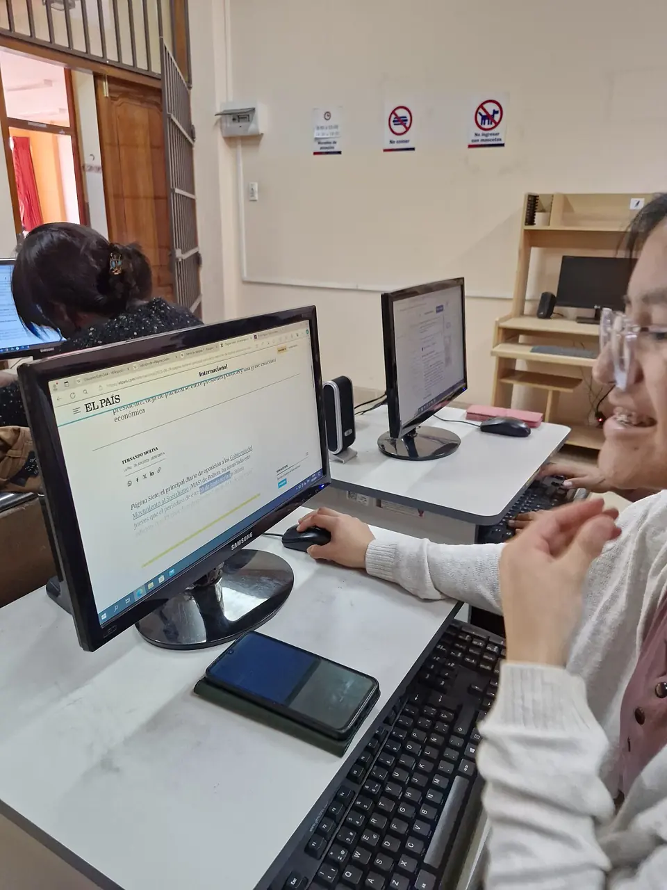

01 — Aprende
Entiende tu idea.
Dale bases.
Explorar una oportunidad implica comprender a quién quieres ayudar, qué necesidad vas a resolver y cómo podrías hacerlo de manera sostenible.
La propuesta formativa de EcoHub aborda emprendimiento, gestión, sostenibilidad y herramientas digitales para conectar lo que sabes con lo que necesitas aprender.
- Conocer a tus posibles clientes.
- Organizar recursos y comprender costos.
- Comunicar el valor de tu propuesta.